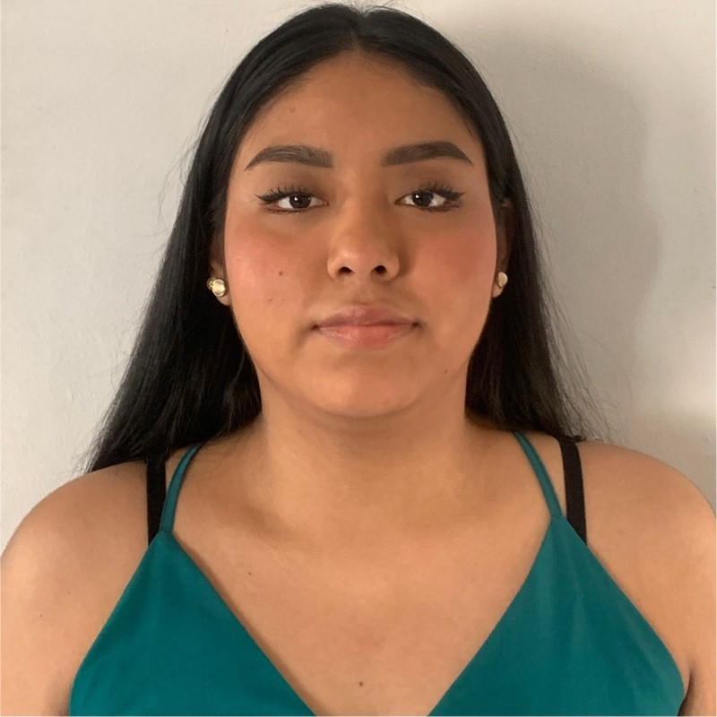

Estudiante | Futuro desarrollador web
Bienvenido a mi curriculum web. Aqui encontraras informacion sobre mi formacion academica, habilidades, proyectos y datos de contacto.
Nombre: Martillo Mite Karla Valeska.
Ocupacion: Estudiante.
Presentacion:Soy estudiante y me interesa aprender sobre tecnologia y desarrollo web
Actividad: Desarrollo de una pagina web personal.
Descripcion: Elaboracion de una pagina web utilizando HTML5 para organizar informacion personal, formacion academica y habilidades.
Herramientas utilizadas: Visual Studio Code y Google Chrome.
Cargo: Trabajador Operativo.
Tiempo en la empresa: 1 ano - hasta la actualidad.
Las certificaciones se agregaran cuando se hayan obtenido.
Las certificaciones se agregaran cuando se hayan obtenido.
Descripcion: Pagina web personal creada para presentar mi informacion, formacion academica y habilidades.
Tecnologias: HTML5.
En esta seccion agregare otros proyectos academicos que desarrolle durante mis estudios.
Correo electronico: Valeska20@gmail.com
Perfil profesional: Visitar LinkedIn